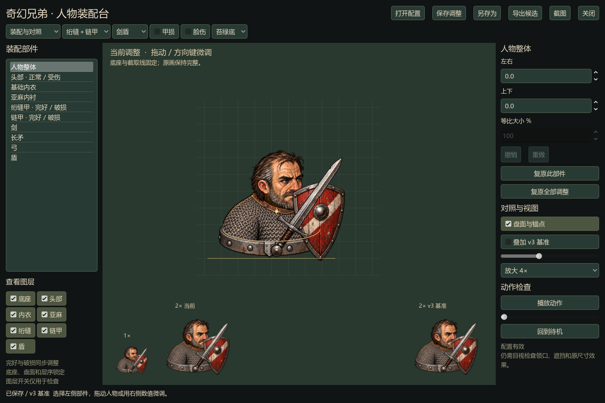

围绕同一块底座调整头部、衣甲和武器。对齐一次，完好与受伤状态一起更新。保留已认可的 v3 作为对照，让每次修改都能比较、保存和撤回。
使用入口：双击项目根目录 Paperdoll.cmd。下面展示的是实际 Windows 程序截图，网页用于查看效果。

同一套定位与检查规则。你可以直接拖动；agent 可以读取、修改和校验保存的配置。
正常与脸伤、完好与甲损配对。保存草案、另存候选，随时撤销或复原，不修改原画。
放大检查领口和遮挡，再回到1×与2×看阅读效果。工具提示不能代替美术判断。